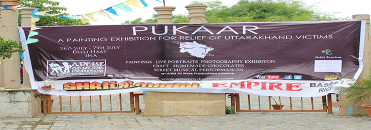

Pukaar -A Painting Exibition for raising funds for Uttarakhand Victims

Pukaar, an unspoken call for help, the plea of a dying victim of a calamity totally uncalled for, the shattered houses and temples and worlds. This calls for some stirring, doesn't it?
We, at Artist At Work Productions, decided to put forward every little form of help for those poor, who lost their all. We believe that art, with hundreds of hearts filled with goodwill, when united can do wonders. Hence, our initiative, PUKAAR, a painting exhibition where we held sale for exclusive paintings donated by immensely talented artists from all over the country, a photography exhibition in association with Delhi University Photography Club, and a street musical gala.
All the money raised was donated to the victims of the deathly floods in and around Uttarakhand, in association with Caritas India, our charity partner.
The event was magnified by live coverage by The Hindu, NDTV, Aaj Tak and Samachar Plus. They were right. There's no better deed in the world than giving!